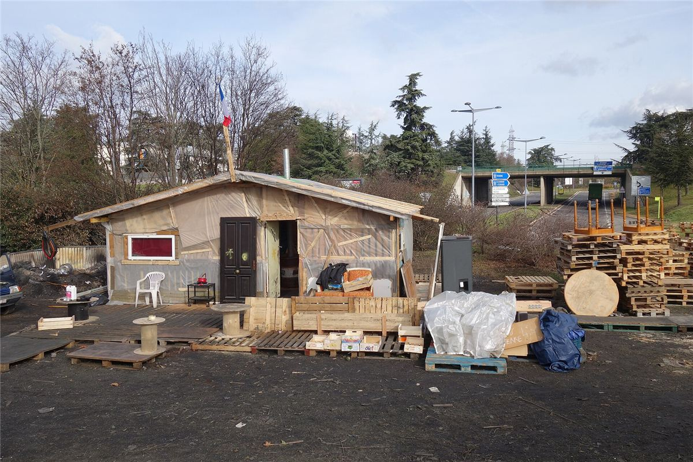
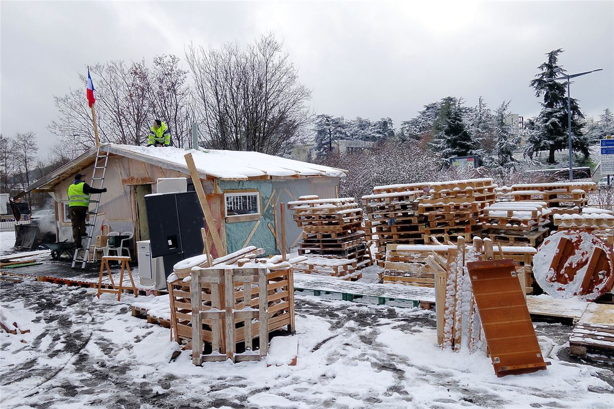
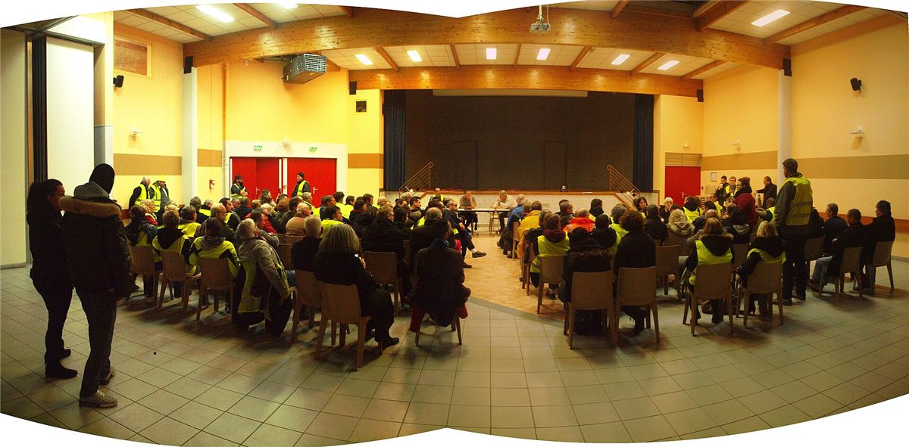
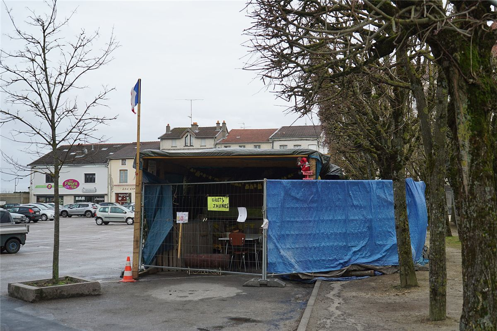

Ce qui a fasciné la bande à Mamie, c'est que personne n'avait appris aux Gilets jaunes à s'organiser comme ça. Ils ont réinventé, sur le tas et sans les livres, des choses que les anarchistes défendent depuis cent cinquante ans : le refus des chefs, l'assemblée, le mandat révocable, l'entraide.
Sans chefs ni porte-parole
- Le mouvement naît sur Facebook, dans des groupes locaux et départementaux. Pas d'adhésion, pas de carte, pas de direction.
- Fin novembre 2018, huit personnes se présentent comme « porte-parole » pour aller négocier. Le mouvement les désavoue presque aussitôt : personne n'a le droit de parler au nom de tout le monde.
- Les partis et les syndicats sont tenus à distance. Beaucoup de Gilets jaunes s'en méfient, après des années de défaites et de trahisons ressenties.
Le rond-point, une commune
Le rond-point, c'est d'abord un lieu de blocage : on ralentit les camions, on filtre les voitures. Mais c'est vite devenu bien plus :
- un lieu de vie : cabanes de palettes, poêles, cantines collectives, où l'on se relaie jour et nuit ;
- un lieu de rencontre entre des gens isolés, qui découvrent qu'ils vivent tous la même chose ;
- un lieu d'entraide : dons de nourriture des paysans et des commerçants du coin, aide pour un loyer, un dossier de la CAF, une panne de voiture ;
- un lieu de parole : on y parle de salaires, d'impôts, de démocratie, des heures durant.

Les préfectures ont fait évacuer les ronds-points les uns après les autres. Souvent, les cabanes ont été rasées, parfois incendiées, puis reconstruites un peu plus loin.

Des ronds-points aux assemblées

Fin novembre 2018, les Gilets jaunes de Commercy, une petite ville de la Meuse, diffusent un appel : refusons les porte-parole autoproclamés, formons partout des assemblées populaires, avec des délégués qui portent les décisions de leur assemblée et peuvent être remplacés à tout moment. Leur cabane, sur la place de la ville, devient un symbole.

En janvier 2019, Commercy accueille la première Assemblée des assemblées (ADA) : quelque 300 délégués venus de dizaines de groupes locaux. Suivront Saint-Nazaire en avril (700 à 800 délégués), Montceau-les-Mines en juin, Montpellier en novembre 2019. Certaines assemblées locales tirent leurs délégués au sort et leur donnent des mandats précis.
Ce que le mouvement demandait
- Vivre dignement : baisse des taxes sur les produits de première nécessité, hausse des salaires et des retraites, rétablissement de l'impôt sur la fortune.
- Décider soi-même : le référendum d'initiative citoyenne (RIC), qui permettrait aux citoyennes et citoyens de proposer ou d'abroger une loi, et de révoquer un élu.
- En finir avec le mépris : la démission d'Emmanuel Macron revenait sur toutes les pancartes.
À retenir
- Le rond-point a été un espace de vie et d'entraide, pas seulement un blocage.
- Le refus des chefs a été spontané, et les assemblées ont tenté de lui donner une forme durable.
- Suite : ce que les libertaires en retiennent.
Sources et pour aller plus loin
Lire
- In girum. Les leçons politiques des ronds-points, Laurent Jeanpierre, La Découverte, 2019.Le rond-point comme lieu politique.
- Décider sans chefMandats révocables et assemblées : notre fiche pratique.
Sur le web
- L'Assemblée des assembléesCommercy, Saint-Nazaire, Montceau, Montpellier.
- Le référendum d'initiative citoyenneL'idée, ses versions et ses débats.
Dossier rédigé par la bande à Mamie à partir de travaux d'historiennes et d'historiens et de textes des mouvements concernés. Libre de reproduction.